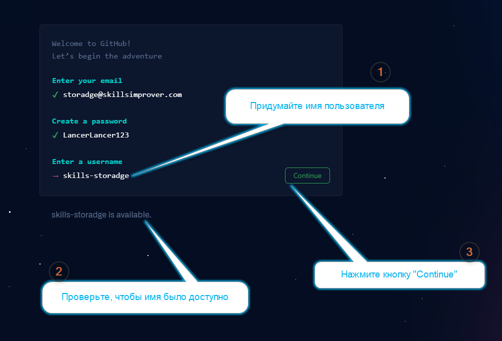

.
Теперь давайте разбираться.
.
Теперь давайте разбираться.
Страница снова расширяется, а у нас снова — супер ответственный шаг. Мы должны:
ПРИДУМАТЬ ИМЯ ПОЛЬЗОВАТЕЛЯ ДЛЯ СВОЕГО GITHUB АККАУНТА!
И здесь, по сути, вам нужно будет ответить, пусть и на важный, но только на один вопрос:
Кто вы — человек или продукт (бренд)?
И, внимание спойлеры, если вы Junior Developer — оставайтесь человеком
.
Теперь давайте разбираться.
Самый главный вопрос — почему имя пользователя так важно?
Дальше ебейший пъяный пиздец (мысли вслух)
Потому что имя пользователя будет отображаться в вашем URL-е Потому что имя пользователя будет отображаться на главной странице вашего аккаунта (проверь!)Вот здесь он/они заканчиваются
Снова много пафоса о том, как имя пользователя важно...
Обрати внимание на фразу «skills-storadge is available.»
И в результате, ваша страница будет выглядеть вот так:
